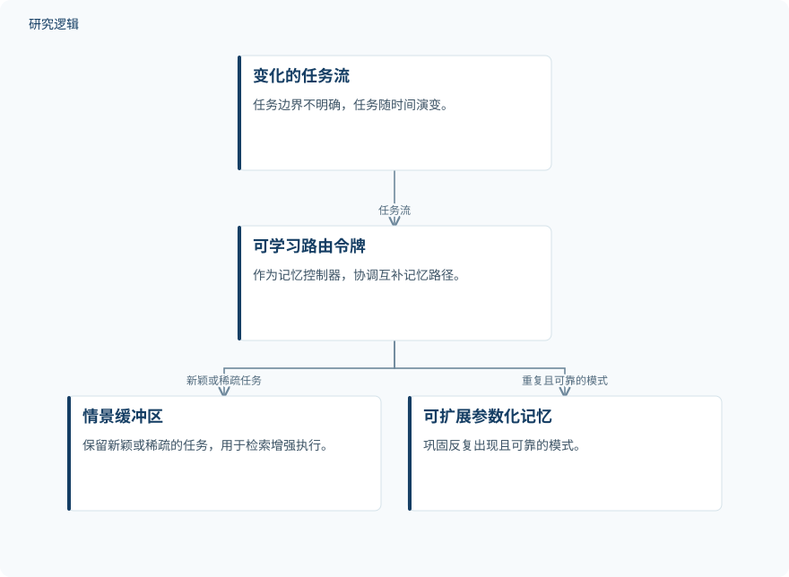

摘要解读
UniMem：面向无明确边界任务流的互补式情景记忆到参数记忆
UniMem: Complementary Episodic-to-Parametric Memory for Boundary-Agnostic Task Streams
解读更新 2026-11-27 21:47 · 依据公开摘要整理，未核验全文细节
大语言模型智能体如何在持续变化、任务边界不明确的任务流中积累经验，同时兼顾新知识吸收与已有能力稳定？UniMem 尝试用互补的记忆路径回应这一问题。
文章目录
持续任务流中的记忆两难
智能体需要记住任务经验，并在后续任务中复用相应的执行策略。但当任务持续变化、边界又不明确时，记忆既要有吸收新证据的灵活性，也要保持已学能力的稳定性。
摘要指出，外部检索式记忆能够快速吸收新证据，却常常难以内化反复出现的执行模式，并带来推理时检索开销；参数化记忆在学成后可以稳定、高效地执行，但通常依赖明确的任务边界和固定参数预算。
用路由协调情景记忆与参数记忆
受到人脑通过互补的情景存储和渐进巩固来平衡可塑性与稳定性的启发，作者提出自主记忆管理框架 UniMem。它以可学习的路由令牌作为记忆控制器，自适应地协调不同记忆路径。
对于新颖或稀疏的任务，框架将其保留在情景缓冲区，用于检索增强执行；对于反复出现且可靠的模式，则将其巩固到可扩展的参数化记忆中。路由令牌与参数记忆块将任务识别和任务执行解耦，使记忆能够按需扩展，部署时不需要任务标签，也避免参数无控制增长。
依据摘要整理的互补记忆路径


示意图仅概括摘要明确描述的记忆协调与执行关系，并非论文原图。
下载 SVG图示关系说明
实线表示相邻阶段的信息流，虚线表示跨阶段联系或反馈。
变化的任务流 → 可学习路由令牌：任务流；可学习路由令牌 → 情景缓冲区：新颖或稀疏任务；可学习路由令牌 → 可扩展参数化记忆：重复且可靠的模式
长程任务流上的摘要结果
摘要报告，在长程流式任务序列实验中，UniMem 通常取得较强的综合结果，同时保持路由与执行稳定性。相较于 Replay LoRA，其平均提升为 4.0 EM。
摘要尚不足以判断的验证范围
仅凭摘要，无法判断实验样本规模、任务序列的具体构成，以及结果覆盖了哪些场景；摘要也未交代除 Replay LoRA 外的比较范围、各项结果的分布或稳定性的具体衡量方式。
因此，综合结果和平均提升应按摘要所述理解，不能据此推断框架在所有任务上的表现，或认定其已在特定实际部署环境中得到验证。
阅读启发：追问记忆何时应被巩固
阅读启发：对于持续工作的智能体，可以关注新经验何时适合保留为可检索记录，何时又值得转化为参数化能力。进一步阅读论文时，可留意“反复出现且可靠”的模式如何识别，以及路由和执行稳定性如何评估。
以上为本站阅读启发与建议，不是论文已验证的结论。